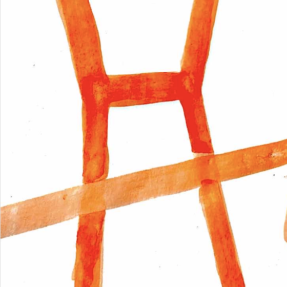

STS 101
An Accessible Introduction to Usefull Concepts and Research Every CS Student Should Know About
Home
Grid
About
Contact and Feedback

Capital
Habitus
Rendering Technical
CS and the Environment
The Pipeline
Hegemonic CS Identities
Closure Theory
Colonialism and Tech
Black Boxing
Ethics Washing
Crip Technoscience
Doing Social Justice in Tech